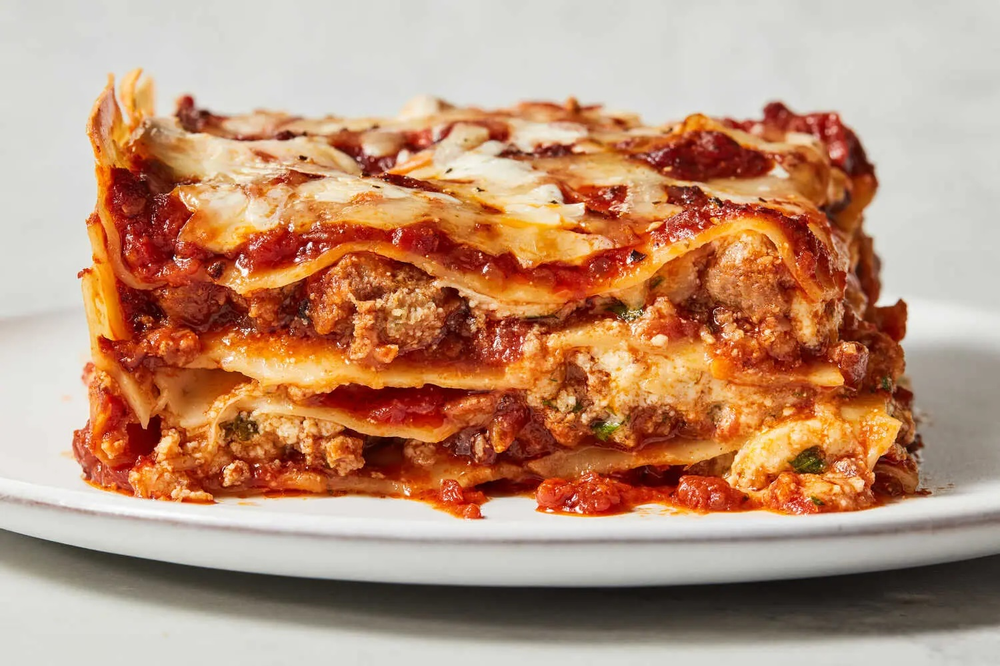

Lasagna Recipe

World's Best Fricken Lasagna
This recipe will deliver the world's best lasagna that everyone will love! Very saucy and cheesy!
Ingredients
Cheese Filling
- 15 oz Ricotta cheese, 2 cups
- 1 Large egg
- 2 Cups Mozzarella Cheese
- 3/4 Cups Parmesan Cheese, freshly grated
- 2 teaspoons Italian seasoning
- 1/2 teaspoon salt
- 1/4 tsp pepper
Meat Sauce
- 1 tablespoon olive oil
- 1 yellow onion, finely diced
- 3/4 lb. ground beef
- 3/4 lb. ground Italian sausage
- 3 cloves garlic, minced
- 1/2 cup chicken broth
- 40 oz. marinara sauce, see notes
- 1 tablespoon tomato paste
- 1 teaspoon hot sauce
- 1 teaspoon Worcestershire sauce
Lasagna Noodles/ Cheese Topping
- 12 lasagna noodles, plus extra in case of breaking
- 2.5 cups mozzarella cheese
Steps
Make the Meat Sauce
- Heat olive oil over medium heat and add the diced onions. Let them soften for 10 minutes. (This allows them to release a little sugar which is a nice offset to the acidity of the tomatoes.)
- Add the ground beef and sausage and increase heat to medium-high. Use a spatula to break up the meat so that it’s very fine and crumbled. Cook for 8-10 minutes, or until cooked through. Add garlic during the last minute. Drain excess grease.
- Add the chicken broth and use a silicone spatula to “clean” the bottom and sides of the pot. Add the marinara sauce, tomato paste, hot sauce, and Worcestershire sauce. Bring to a boil, then reduce to a simmer. Cover partially and let the sauce simmer gently while you boil the pasta noodles.
Preheat Oven and Cook the Lasagna Noodles
- Preheat oven to 375°
- Begin boiling a large pot of salted pasta water for the lasagna noodles. Once a rapid boil is reached, cook the noodles to al dente according to package instructions. (Set a timer to ensure you don’t overcook them.) Gently stir with a wooden spoon throughout cooking to prevent the noodles from sticking. Drain and rinse with cold water until noodles are completely cool.
- Lay the cooled noodles flat on wax or parchment paper while you begin assembling the lasagna.
Assemble
- Spread 1 heaping cup of meat sauce on the bottom of a 9 x 13-inch casserole dish. Next, add 4 lasagna noodles, overlapping them if needed.
- Spread 1/3 of the ricotta cheese mixture over the noodles, followed by about 1 ½ cups of meat sauce.
- Top with 4 more lasagna noodles, 1/3 of the ricotta cheese mixture, 1 ½ cups meat sauce.
- Finish with 4 more lasagna noodles, the rest of the ricotta mixture, and the rest of the meat sauce.
- Top with 2 ½ cups of Mozzarella cheese.
- Spray foil with nonstick cooking spray and place it spray-side-down on top of the baking dish to prevent the cheese from sticking to it.
Bake
- Bake for 35 minutes. Remove cover and bake for 10 more minutes.
- Remove and garnish with fresh parsley. Let it sit for 15 minutes prior to serving to allow the layers to set.
Home